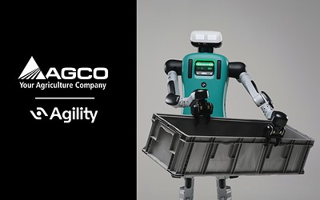

任务与证据
AGCO与Agility宣布商业协议，计划在AGCO位于堪萨斯州Hesston的工厂开展人形机器人试点。发行方公告时间为10月20日12:15 UTC，早于本期严格的二十四小时窗口，因此应列入近三日补充。试点预计2027年开始。新增价值在于有了明确客户、地点和搬放任务，而不是Digit已经在AGCO工厂广泛部署。10月6日期刊曾报道Digit 5及FORT安全合作备忘录；这些旧功能不能再被计为本轮新发布。
AGCO / Agility Digit · 产品 · 未来试点协议
同一项目的完整分析。研究截止为14:00:02Z；来源核验与图片获取在后，不改变事件日期。

AGCO与Agility宣布商业协议，计划在AGCO位于堪萨斯州Hesston的工厂开展人形机器人试点。发行方公告时间为10月20日12:15 UTC，早于本期严格的二十四小时窗口，因此应列入近三日补充。试点预计2027年开始。新增价值在于有了明确客户、地点和搬放任务，而不是Digit已经在AGCO工厂广泛部署。10月6日期刊曾报道Digit 5及FORT安全合作备忘录；这些旧功能不能再被计为本轮新发布。
公告列出的初始工作是零件分类、堆叠和周转箱放置。当前制造人员执行或监督这些重复物料搬运，生产与运营团队则负责让正确物料到达正确位置。拟议变化是把一个限定的搬放任务交给Digit，通过Agility Arc这一车队部署与管理层协调。机器人完成移动并不是任务终点：后续工序必须在合适时间收到正确零件或箱子，并满足摆放方向与位置要求。只有把动作接回物料流，才能判断它是在完成业务任务，还是仅展示一个可重复姿态。
协议确定了调查价值的场所，但没有回答多项采购和运行问题。已读公告未公布机器人数、试点价格、实际吞吐量、干预率、现场恢复程序或成功标准。Agility当前资料也提醒Digit 5仍在开发。配图呈现Digit抱着周转箱及双方公司标志，可以说明公告对象，却不能证明计划中的AGCO试点已经运行。同样，减少重复劳动的身体负担是合理假设，但这份协议没有提供测得的人体工效改善结果。
控制与恢复将决定系统能否适配工厂。人要定义哪些零件、箱子可以处理，决定放错物料或通道受阻时如何响应，并继续对异常和生产连续性负责。公告没有记录这些现场程序，不能据此补造自主恢复、不受限制的人机近距离协作或安全重试保证。采购方还需知道谁能修改任务、谁能停止运行，以及机器人不可用时操作员如何把工作交回人工。这些是由已披露工序引出的采用问题，不是已经验证的产品功能。
同任务比较应包含更好的人工工位、手推车、输送线、移动机器人配固定机械臂，以及调整搬运布局。人形外观只有在灵活性足以抵消该现场的集成、监督和维护成本时才有价值。合理试点评分卡应统计每个付费运行小时正确完成的零件或箱子移动、放错次数、人工干预、堵塞通道后的恢复，以及跨班次可用性，同时计入任务准备与异常处理的人力，而非只计算机器人运动时间。若它能演示一个流程，却无法在日常生产变化中保持有效吞吐，协议创造的是实验机会，仍未证明可规模化的工厂回报。